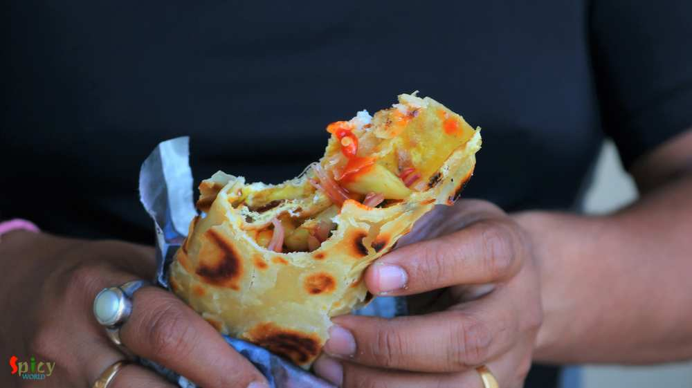

Simple and Easy Recipes
Egg Roll - Kolkata style / Bengali Breakfast Wrap (ডিমের রোল)
© 2016 Spicy World, Published on: Jul 12, 2018
One of the famous street food from Kolkata is 'egg roll'. A flaky paratha, a layer of egg and lots of veggies with sauces will never fail to satisfy your appetite. There are so many varities of roll like 'egg-chicken roll', 'mutton roll', 'paneer roll', 'egg-mutton roll' etc. They all are very yummy and easy to make. Try this in your kitchen and let me know about your story.
")
Ingredients
- For paratha
- 1 cup of all purpose flour.
- 2 Teaspoons cooking oil.
- Salt.
- Water.
- Some dry flour for rolling.
- For layering and filling
- 3 eggs.
- Salt & Pepper.
- Half cup of cooking oil.
- 1 cup cucumber thinly sliced.
- Some chopped coriander leaves.
- 1 cup onion thinly sliced.
- 2 green chilies chopped.
- 2 Tablespoons of lemon juice.
- 1/4th Teaspoon of chaat masala.
- 3 Tablespoons chili sauce.
- 3 Tablespoons tomato ketchup.
")
")
Steps
Put flour, little salt, oil and in a mixing bowl. Mix it with your hand very well for a minute.
Then add little by little water and mix it. Make a soft dough. Knead the dough for 5 minutes and cover with a damp cloth / bowl for 30 minutes.
In another bowl add onion slices, chopped green chilies, lemon juice and chaat masala. Mix well and let it rest for 15 minutes.
Now take a lemon size portion from the dough in your palm. Roll it like a ball. With the help of some dry flour flatten it to a semi thin disc.
Heat a tawa / frying pan for 2 minutes.
Place the paratha in the hot tawa for 30 seconds.
Turn the side and give it another 30 seconds.
Frying
Now add 2 Tablespoons of oil from sides of the paratha.
Crack open an egg, sprinkle pinch of salt and pepper.
Then with a round laddle spread the egg all over the paratha. Then flip it to the other side and fry for a minute.
I mentioned 3 eggs because you can make 3 rolls out of the ingredients.
Assembling
Now as a filling first spread some of the onion and green chilies mixture then some cucumber and coriander leaves, lastly add 1 Tablespoon of each 2 sauces.
Roll the paratha tightly and secure one side with rectangular piece of paper.
Your yummy Egg roll is ready ...
Enjoy this hot with your family ...
 (Final)")